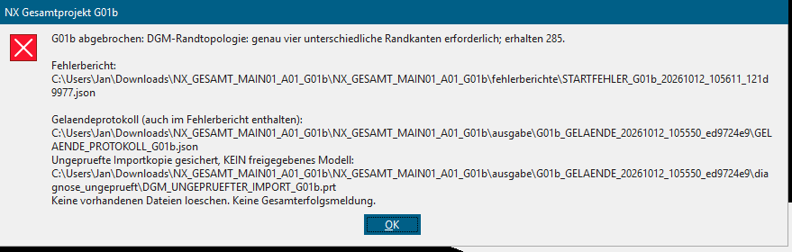

Vier Geländeseiten.
Nicht zwingend vier CAD-Kanten.
Änderung der Randprüfung im vollständigen NX-Projekt. Hausstand: MAIN01-A01. Die neue Routine ordnet mehrere Kantenstücke den vier ursprünglichen Geländeseiten zu und prüft deren Abdeckung und Form.
Startanleitung · Testzusammenfassung · Tatsächlicher CAD-Test · Unveränderte Haus-/Quelldaten
.prt-Dateien.01 / Der aktuelle Abbruch

Der bisherige G01b-Code verlangte genau vier verschiedene Kantenobjekte. Diese Annahme war für unterteilte Randseiten zu streng. Im Programm liegt diese Abbruchstelle vor der Auswertung der vier UV-Ecken und der 16.748 Geländepunkte. Der Screenshot beweist deshalb noch keinen erfolgreichen Innenflächenvergleich.
02 / Was geändert ist
| Bisher | G01c |
|---|---|
| Abbruch allein bei anderer Anzahl als vier Kanten. | Alle tatsächlichen Kanten und ihre Endpunkte werden erfasst. Jede Kante muss eindeutig zu genau einer Quellseite gehören. |
| Eine Kante pro Quellseite. | Sortierte Kantenketten über alle vier Seiten; Kontrolle von Eckanschlüssen, fehlenden Abschnitten, doppelter Belegung, Lücken und Überlappungen. |
| 736 Randproben an vier Kanten. | Alle 736 ursprünglichen Randproben bleiben erhalten. Zusätzlich drei Proben pro tatsächlich vorhandener Kante, damit kein kleines Teilstück ungeprüft bleibt. |
| Neue Kantenanzahl wurde vor der ausführlichen Erfassung abgewiesen. | Kantenanzahl und Endpunkte werden vor der Kettenprüfung protokolliert; ein Fehler enthält die betroffene Seite und Kante. |
Die zulässige CAD-Abweichung bleibt 0,25 mm. Auch die direkte Auswertung aller 16.748 Quellknoten und Zellmittelpunkte bleibt erhalten. Die Zuordnung erfolgt vor den Abstandsabfragen; es wird nicht die Kante mit dem günstigsten gemessenen Abstand gewählt. Es werden keine Kanten gelöscht, vereint oder verschoben.
Mit 285 Kanten ergeben sich 1.591 Randabfragen: 736 Originalproben plus 3 × 285 zusätzliche Proben. Die neuen Schritte verwenden dieselben NX-Methoden wie G01b; es wurden keine zusätzlichen API-Aufrufe eingeführt. Flächeninhaltsintegration bleibt im Standardmodus aus.
03 / Tatsächlicher CAD-Gegencheck
Zusätzlich zu simulierten NX-Antworten wurde die Original-STEP mit Open CASCADE eingelesen. Auf derselben Trägerfläche wurde ein gültiges künstliches Testmodell mit 285 Randkanten konstruiert. Es ist nicht die importierte NX-Datei des Nutzers und ersetzt die ausgelieferte Quelle nicht.
| Fall | Ergebnis |
|---|---|
| Originalfläche mit 4 Kanten | 16.748 Koordinatenvergleiche und 748 Randabfragen bestanden. |
| Künstlich geteilter Rand mit 285 Kanten | 16.748 Koordinatenvergleiche und 1.591 Randabfragen bestanden. Verteilung der Testkanten: 64 / 64 / 79 / 78. |
| Zusätzliche innere Öffnung | Zurückgewiesen: Die vier neuen Innenkanten gehören nicht zu den äußeren Quellseiten. |
| Innere Stützstelle um 2 mm angehoben | Am Punkt 1089 zurückgewiesen; die Innenflächenprüfung bleibt wirksam. |
Die größte numerische Abweichung der beiden passenden CAD-Testfälle liegt unter 0,000001 mm. Das ist ein rechnerischer Vergleich der CAD-Geometrie, keine Genauigkeit des Geländedatensatzes. Die neue Python-Testreihe enthält zudem fehlende Teilstücke, falsche Höhen, doppelte Kanten, umgekehrte Reihenfolgen, ungleichmäßige Teilung und kumulierte kleine Lücken.
04 / Prüfstand und Grenzen
564 Offline-/Simulationstests, davon 42 neue Randprüfungen. Die 36 übernommenen UV-Tests bleiben enthalten; erwartete Zusatzproben und Prüfmeldungen wurden an die neue Regel angepasst. Die Gesamtsteuerung wurde mit 285 künstlichen DGM-Randkanten durchlaufen. Die bestehenden unabhängigen Prüfungen aller 1.418 Hauskörper und elf STEP-Quelldateien wurden ebenfalls ausgeführt.
Die Prüfung ist ein endlicher Koordinaten-, Endpunkt-, Intervall- und Randprobenvergleich, kein universeller Beweis der gesamten stetigen Fläche. Nicht eindeutig zuordenbare Sonderkanten oder zusätzliche Einzelflächen werden weiter gemeldet. Eine Grenze von 4.096 Randkanten begrenzt den Arbeitsaufwand; oberhalb wird keine Geometrie stillschweigend übersprungen. Ein echter NX-/Parasolid-Lauf und eine gemessene NX-Laufzeit liegen weiterhin nicht vor.
05 / Nächster Lauf – nur Gelände
04_NUR_GELAENDE_MIT_PROTOKOLL.py
Das vollständige Paket in einen neuen Ordner entpacken und diesen Starter im Hauptordner über den bisherigen Journalstart auswählen. Eigene NX-Arbeit vorher sichern. Kein Part vorbereiten, keine STEP-Datei manuell importieren und kein separates Diagnosejournal starten. Das Haus wird nicht erneut erzeugt oder verändert.
Der Ablauf bleibt: Import → ungeprüfte Sicherung → Randketten und direkte Flächenprüfung → abschließendes Speichern. Bei einem neuen Abbruch enthält STARTFEHLER_G01c_....json die Diagnosen. Zusätzlich liegen DGM_FLAECHENPRUEFUNG_G01c.json und die Rohabfragen im Laufordner.